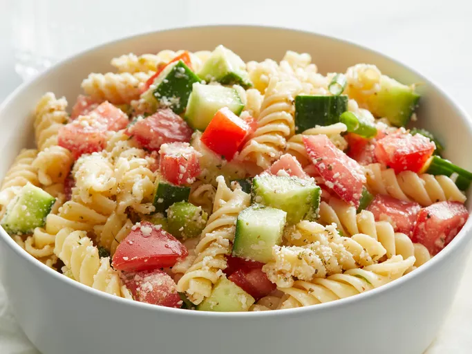

Simple Pasta Salad

Description
An easy pasta salad with Italian dressing, simple yet very yummy. Almost any type of pasta may be used. Best if left to sit overnight.
Ingredients
- uncooked rotini pasta
- Italian salad dressing
- cucumbers, chopped
- tomatoes, chopped
- green onions, chopped
- grated Parmesan cheese
- Italian seasoning
Steps
- Gather all ingredients
- Bring a large pot of lightly salted water to a boil. Place pasta in the pot
- Toss cooked pasta with Italian dressing, cucumbers, tomatoes, and green onions in a large bowl
- Mix Parmesan cheese and Italian seasoning in a small bowl, and gently mix into the salad
- Enjoy!